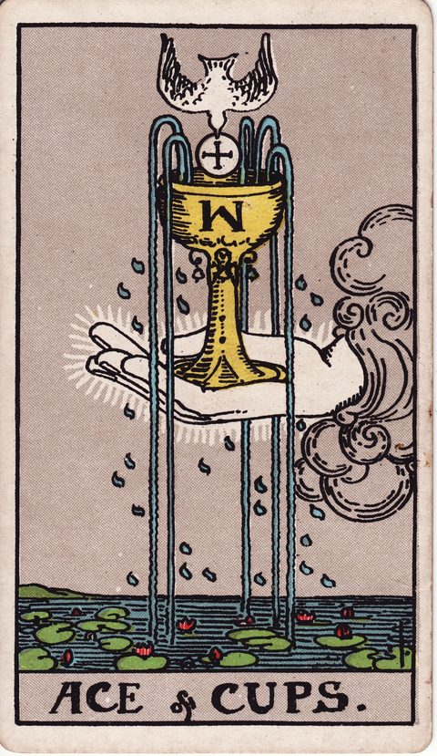
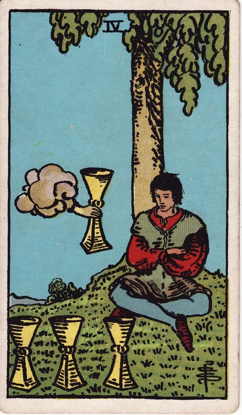
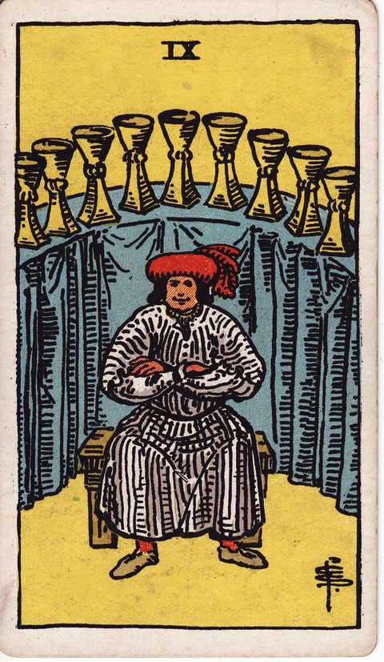
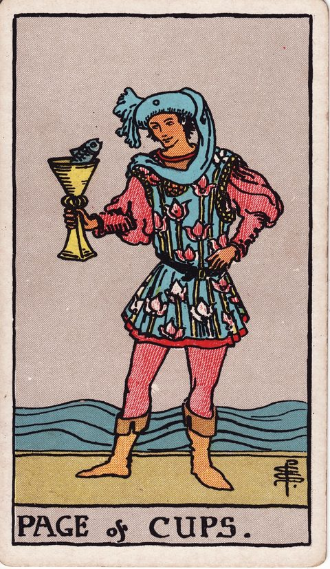
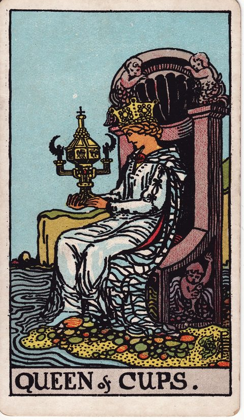

CUPS · WATER
Cups meanings (14 cards)
Cups (the Holy Grail) correspond to the element of water and govern emotion, relationships, love, and heartfelt satisfaction. The numbered cards from Ace to Ten trace a flow in which feelings overflow, are shared with someone, pass through disappointment and uncertainty, and move toward deep fulfillment. The court cards show what kind of person you are in how you use sensitivity and empathy. When Cups appear as you face a decision, they offer a chance to turn your attention to what conditions and logic alone make hard to see — “How do I really feel?” and “What will happen to my relationships with the people who matter to me?” They are a suit you can rely on when organizing a decision you're torn over, where your head has decided but your heart hasn't caught up. Smaller numbers tend to show the first stirrings of feeling, while larger numbers show mature satisfaction and the completion of a relationship. Try reading them while checking which stage your own heart is at right now.













Use the viewpoint of Cups to lay your own two options side by side.
Draw a card and organize your decisionCups keywords at a glance
- Ace of Cups: upright "Feelings are born, Kindness, A fulfilled heart" / reversed "Hiding feelings, A tired heart, Feeling unfulfilled"
- Two of Cups: upright "Hearts connecting, Cooperation, An equal relationship" / reversed "Feelings out of sync, Miscommunication, One-way"
- Three of Cups: upright "Friendship, Sharing joy, Companions" / reversed "Matching companions too much, Gossip, Too much play"
- Four of Cups: upright "Not feeling it, Brooding, Overlooking" / reversed "Noticing again, Interest returning, Beginning to move"
- Five of Cups: upright "Sadness, Disappointment, What was lost" / reversed "Recovering, What remains, Accepting help"
- Six of Cups: upright "Memories, Kindness, Someone you miss" / reversed "Wanting to go back, Leaning on memories, Not seeing the present"
- Seven of Cups: upright "Dreams expanding, Cannot choose, Imagination" / reversed "Seeing reality, Narrowing down, Deciding"
- Eight of Cups: upright "Leaving, An ending, Searching again" / reversed "Cannot leave, Cannot decide, Continuing vaguely"
- Nine of Cups: upright "Satisfaction, Wishes, Enjoying" / reversed "Something missing, Too greedy, Satisfaction in appearance only"
- Ten of Cups: upright "People close to you, Peace of mind, Celebrating together" / reversed "A gap with the ideal, Miscommunication, A forced smile"
- Page of Cups: upright "Honest feelings, Inspiration, Welcome news" / reversed "Swept by mood, Expecting too much, Hiding feelings"
- Knight of Cups: upright "Sharing feelings, An invitation, Consideration" / reversed "Words only, Swept by atmosphere, A gap with expectations"
- Queen of Cups: upright "Being there, Kindness, Listening to feelings" / reversed "Too considerate, Putting yourself last, A tired heart"
- King of Cups: upright "Calm, Consideration, Settling your feelings" / reversed "Bottling up feelings, Watching faces, Moving people with emotion"